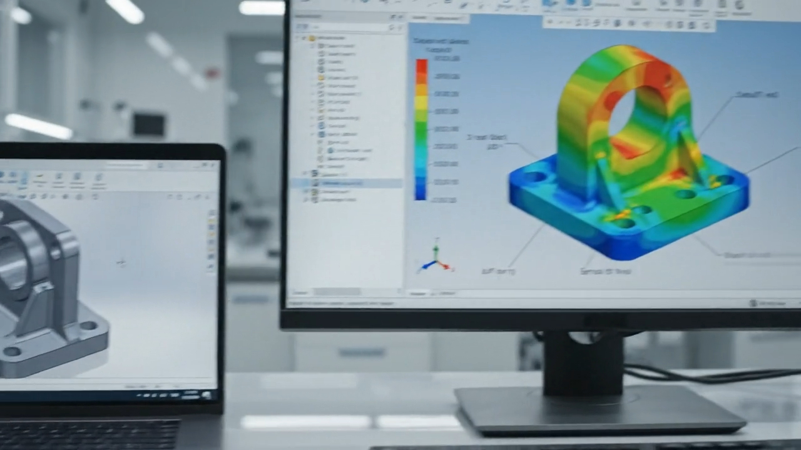

FEATURED / FIELD NOTEDesign for manufacturing is a conversation, not a checklist.
The best production decisions happen while a design is still flexible. A practical look at the questions that keep teams from discovering risk too late.
Read the article ↗